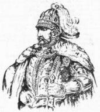
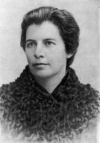
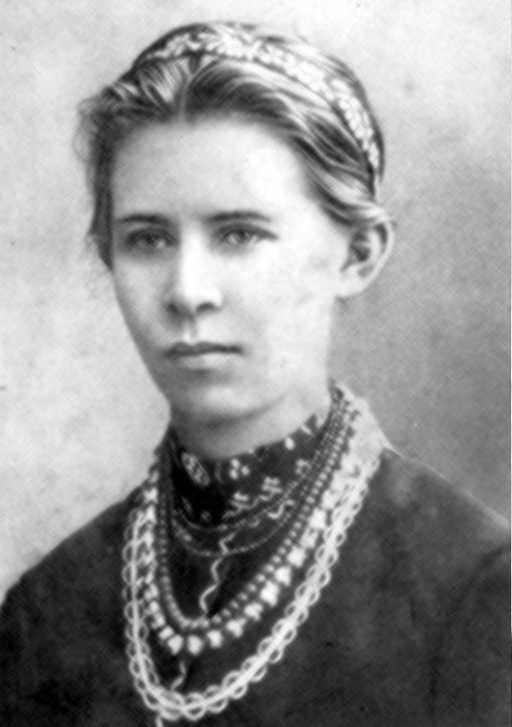
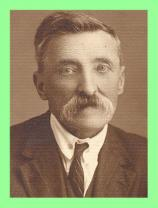
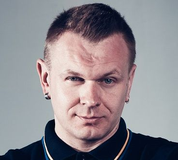

Любарт Дмитро
Литовсько-руський князь. Після смерті Юрія II Болеслава був закликаний боярами на Галицько-Волинський престол. Утримався лише на Волині. У Луцьку збудував замок.
Олена Пчілкка (Драгоманова-Косач Ольга Петрівна)
Українська письменниця, етнограф, фольклорист, громадська діячка, матір Лесі Українки. Народилася в с. Гадячі на Полтавщині. Майже 30 років жила на Волині. Автор поетичних творів, оповідань, п’єс. Була редактором журналу “Рідний край” та додатку до нього “Молода Україна”. Член-кореспондент АН України з 1927 р. Зібрала і видала один із перших в Україні альбом українських народних орнаментів.
Леся Українка
Видатна українська поетеса, драматург і громадська діячка. Народилася у Новограді-Волинському на Житомирщині. Значна частина її життя пов’язана з Волинню, особливо із с. Колодязне на Ковельщині, де написала близько 80 творів. Вершиною її творчості стала драма-феєрія “Лісова пісня”, на яку поетесу надихнула рідна Волинь. Похована в Києві.
Левицький Модест Пилипович
Український письменник, педагог, лікар та громадський діяч. Народився на Хмельниччині. Закінчив історико-філологічний та медичний факультети Київського університету. Працював лікарем у Ковелі, Києві та інших містах. У 1919 р. був радником, згодом головою дипломатичної місії у Греції. У 1927 р. переїхав до Луцька працювати вчителем української мови і літератури в приватній гімназії ім. Лесі Українки. Автор популярних медичних брошур, оповідань з життя простих людей у журналах “Киевская старина”, “Літературно- науковий вісник” тощо. Похований у Луцьку.
Балабуха Федір Олексійович
Український актор, народний артист України з 1976 р. Народився на Дніпропетровщині. Працював у Запорізькому, Мелітопольському, Херсонському, а з 1976 р. пересувному, Ніжинському музично-драматичному театрах. У 1954-1983 р.р. – провідний актор Волинського музично-драматичного театру ім.. Т.Г.Шевченка в Луцьку.
Положинський Олександр Євгенович
Лідер українського гурту «Тартак», створеного 1996 року, проекту «Був'є» (2014), проекту «Ол.Ів.'Є» (2019), співак і шоумен, ведучий радіо «НВ»
